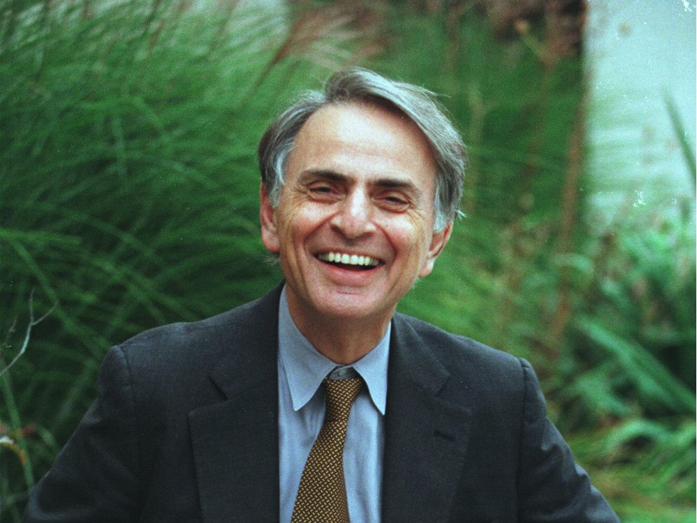

Carl Edward Sagan fue un astrónomo, astrofísico, cosmólogo, astrobiólogo, escritor y divulgador científico
estadounidense.

" Sagan falleció de neumonía en el Centro de Investigación del Cáncer Fred Hutchinson de Seattle,
Washington (EE.UU.),
el 20 de diciembre de 1996. Tenía 62 años. "
Aspectos desconocidos de su vida
La serie de documentales “Cosmos: Un viaje personal” emitida en 1980 y creada y presentada por Sagan, fue
todo un hito. Gracias a su sencillez y simpatía a la hora de divulgar ciencia, la serie documental acabó
ganando un Premio Emmy y un Peabody y fue vista por más de 400 millones de personas de más de 60 países.
Sagan consumía -y defendía- el uso de la marihuana. De hecho, bajo el pseudónimo Mr. X, escribió un ensayo
sobre este tema: “Marihuana Reconsidered” en 1971, donde exponía que el consumo de cannabis le ayudaba o
inspiraba en algunos de sus proyectos o iniciativas.
Aparte de censurar a las grandes potencias por producir armamento nuclear, el astrónomo también mantuvo una
oposición y crítica y muy constante contra las pseudo-ciencias.
El escritor de ciencia ficción Isaac Asimov comentó una vez que Martin Minsky y Carl Sagan eran las dos
únicas personas que había conocido cuyo intelecto superaba al suyo.
Carl Sagan ganó el Premio Pulitzer en 1978 con “Los Dragones del Edén”.
Para mayor informacion de la vida y obras representativas puede dirigirse al siguiente link: Wikipedia<